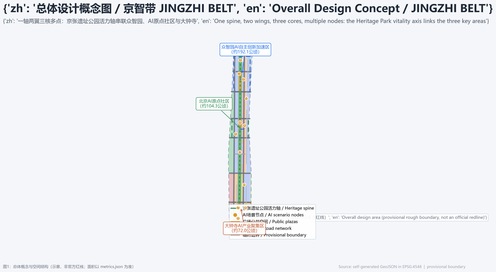
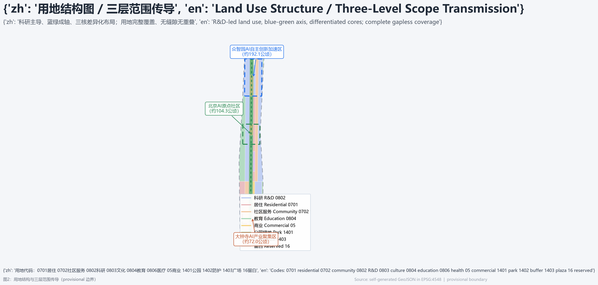
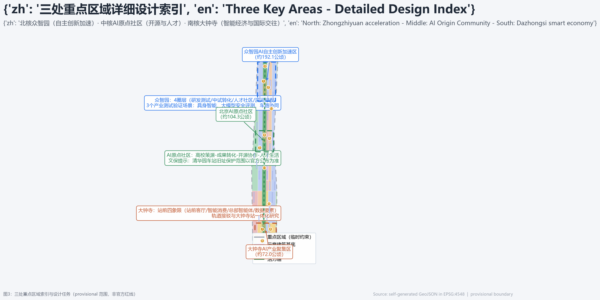
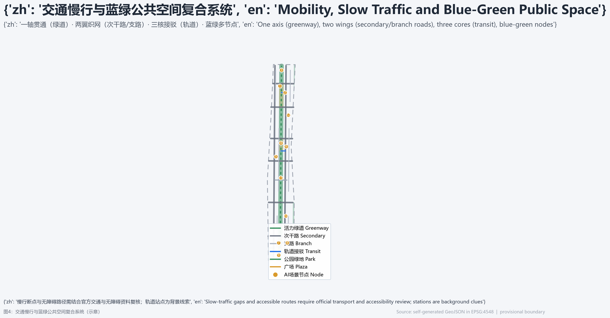
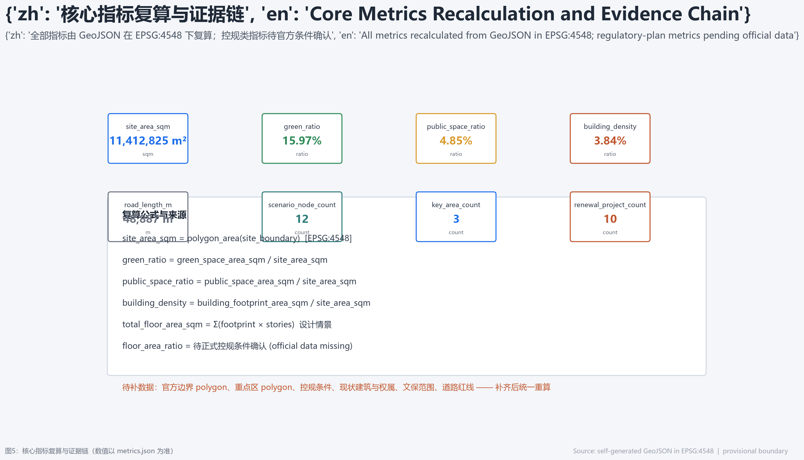

JINGZHI BELT: Rails, Code, and Life - Overall Urban Design for the Centennial Jing-Zhang AI Innovation Belt (AI Agent Co-creation Proposal)
Using the Jing-Zhang Railway Heritage Park as the historical and public-space spine, the proposal links the Zhongzhiyuan, Beijing AI Origin Community, and Dazhongsi cores into a one-spine, two-wings, three-cores, multi-nodes design; all spatial suggestions are conceptual and must be recalculated when official boundaries and regulatory-plan conditions become available.
JINGZHI BELT: Rails, Code, and Life - Overall Urban Design for the Centennial Jing-Zhang AI Innovation Belt
Design Basis and Source List
This proposal is organized around the qualification pre-announcement for the Centennial Jing-Zhang AI Innovation Belt International Urban Design Open Call published by the Haidian Branch of the Beijing Municipal Commission of Planning and Natural Resources on 2026-05-09 来源, and follows the agent-facing open-call taskbook for naming, ecosystem cases, scenario cards, pilgrimage landmarks, cultural narrative, and long-term operations 来源. All sources, permitted uses, and limitations are recorded in sources.json; in the central registry (data/source_registry.json), sources marked usable_for_formal="yes" may support formal task statements, while provisional_only and background_only materials may be used only for generation, visualization, and context, and must not be promoted to official redlines, statutory controls, or government implementation commitments 来源.
No official polygon with a verifiable coordinate system is publicly available yet for the overall design area or the three key areas. This proposal uses the maintainer-provided brief/site-package/geometry/provisional_boundaries.geojson as a temporary rough boundary 来源, calibrated in EPSG:4548 against the announced textual bounds and approximate areas (overall design area about 11.4 km2; three key areas together about 368.4 ha), with deviations under 0.5%. This boundary is not an official redline, an approval basis, or a precise-area basis; once official polygons are supplied, all spatial layers and metrics must be recalculated together. The organizer's data gap does not block content scoring, but every area, ratio, and project location in this proposal retains a "pending official data" attribute 空间数据 指标.
The professional standards followed include the Urban Design Administration Measures (for public space and city character), the Measures for Compilation and Approval of Regulatory Detailed Plans (for distinguishing known controls from pending controls), and the National Land Use Classification Guide (for unified land-use codes) 标准 标准 标准. The three key areas correspond to announcement tasks 1.5.3.1, 1.5.3.2, and 1.5.3.3 and agent tasks agent.1 through agent.6; all are covered item by item in compliance_matrix.json, standard_matrix.json, and design_depth_matrix.json.

Three-Level Scope Framework
The proposal works at the three scopes defined by the announcement: the coordinated research area of about 43.6 km2 (bounded by the North 5th Ring Road, the Jingzang Expressway, Xizhimenwai Street, and Wanquanhe Road), answering how the AI innovation ecosystem and future city form should be organized; the overall design area of about 11.4 km2 (the urban and industrial areas within 1-2 km around the Jing-Zhang Heritage Park), answering how urban renewal and regulatory-plan-level urban design should be mapped; and the key detailed-design area of about 368.4 ha, covering from north to south the Zhongzhiyuan AI Acceleration Area (about 192.1 ha), the Beijing AI Origin Community (about 104.3 ha), and the Dazhongsi AI Industry Cluster (about 72.0 ha), answering how the three districts should reach detailed-design depth 来源 深度.
The three scopes transmit top-down: the coordinated research defines the industry-chain and city-form judgment, the overall design translates it into land use, buildings, roads, green space, public space, and renewal projects, and the key-area design validates the implementability of specific parcels, building forms, transit connections, and AI scenarios 空间数据 深度. Spatial evidence sits in geometry/site_boundary.geojson, geometry/key_areas.geojson, and geometry/phasing.geojson; the three key areas do not overlap and lie inside the overall design area 空间数据 指标.

Coordinated Research Area: Industry and Future City Research
Three Positionings and Five Functions
The coordinated research follows three positionings: the Centennial Jing-Zhang Cultural Belt (turning railway heritage into an experienceable urban narrative), the Metropolitan AI Life Experience Belt (bringing AI scenarios into everyday urban life), and the AI Convergence and Innovation Belt (integrating industry, space, and governance) 来源. The five functions are an AI full-stack independent innovation system, a world-class AI innovation ecosystem, a new AI+ scenario-empowerment paradigm, an intelligent vibrant AI city, and global discourse power in AI governance. In the three-areas-two-wings structure, the three areas are the key districts and the two wings are the Zhongguancun Technology Service Wing (global factor allocation, Zhongguancun IP and capital) and the Xiaoyuehe Scenario Empowerment Wing (AI scenario empowerment and intelligent urban life) 来源.
Global AI Ecosystem Cases (6)
The proposal extracts transferable mechanisms from public global cases to explain the spatial and operational logic of the ecosystem design; these are background research, not implementation commitments 来源:
| Case | Transferable mechanism | Spatial anchor in this proposal |
|---|---|---|
| Stanford Research Park | University origination, venture capital, corporate conversion | Origin Community campus-incubation cluster |
| Kendall Square, Boston | Dense life-science and AI labs and exchange | Zhongzhiyuan R&D and testing cluster |
| London Knowledge Quarter | Mixed knowledge institutions and incubators in open streets | Origin Community open-source quarter |
| Nanshan Sci-Tech Park, Shenzhen | Fast hardware prototype-to-market loop | Zhongzhiyuan pilot and testing grounds |
| Smart Nation Singapore | Government-opened scenarios, regulatory sandbox, AI governance | Zhongzhiyuan safety evaluation and sandbox |
| Factory Berlin | Developer community and adaptive reuse of older buildings | Dazhongsi smart-economy quarter |
Naming and Visual Identity Direction
The proposal suggests the belt brand name "JINGZHI BELT": "Jing" anchors Beijing and the Jing-Zhang Railway, "Zhi" anchors AI and Zhongguancun innovation, and "Belt" expresses the linear corridor and continuous scenarios. The official project name remains "Centennial Jing-Zhang AI Innovation Belt". The logo direction is "Herringbone Rail x Intelligence Ring": the two rails of the Jing-Zhang herringbone alignment evolve into circuit paths, and three glowing rings at three nodes represent the three key areas; the standard palette is rust orange (heritage), tech blue (innovation), and ecological green (blue-green space). This is a brand concept direction; final logo, fonts, and imagery require cleared rights 来源 深度.
Overall Design Area: Urban Renewal and Regulatory-Plan-Level Urban Design
Overall Spatial Structure: One Spine, Two Wings, Three Cores, Multiple Nodes
The overall design proposes a "one spine, two wings, three cores, multiple nodes" structure. The spine is the Jing-Zhang Heritage Park vitality axis linking the three key areas from north to south and carrying walking, cycling, public activity, and AI exhibitions. The two wings are the Zhongguancun Technology Service Wing (innovation services, capital, and IP) and the Xiaoyuehe Scenario Empowerment Wing (scenario testing, life services, and urban vitality). The three cores are Zhongzhiyuan (autonomous-innovation acceleration), the AI Origin Community (open-source ecosystem and talent), and Dazhongsi (smart economy and international exchange). The multiple nodes are 12 AI scenario nodes distributed along the axis 空间数据 深度.
Land use is dominated by R&D land (about 36%), with residential and community services about 24%, public administration and services about 15%, commercial services about 5%, green and open space about 21%, and reserved land about 0.4% 空间数据 指标. Urban renewal follows a "retain first, renovate, build selectively, reserve" logic: universities, research institutes, and mature communities are retained and improved; inefficient markets, wholesale spaces, and old industrial buildings are proposed as references for conversion into AI R&D, exhibition, and pilot space; new development is concentrated at the Zhongzhiyuan gateway, the Dazhongsi station front, and the Origin Community public frontage. Parcel-level retain-renovate-demolish decisions must be deepened by professional teams on ownership, heritage, regulatory-plan, and engineering conditions 深度.
This proposal does not set statutory values for FAR, building height, or building density: official regulatory-plan conditions are missing and all are listed as "pending official regulatory-plan confirmation" 标准 深度. Building scale uses a "design-scenario estimate": 29 illustrative building footprints in geometry/buildings.geojson are assigned assumed stories by function type, producing a design-scenario of about 43.8 ha of building footprint and about 3.63 million m2 of total floor area, for spatial-structure discussion only and not as an approval basis 空间数据 指标.

Detailed Design of Key Areas
Zhongzhiyuan AI Acceleration Area (North Core, about 192.1 ha)
Positioning: a garden-type full-stack autonomous-innovation acceleration area carrying the AI full-stack system and global discourse power in AI governance. Structure: four rings around the Zhongzhiyuan Innovation Living Room - R&D and testing, pilot and conversion, talent community services, and riverside green wedges; R&D in the west, acceleration in the east, and reserved future development in the north. Buildings: existing industrial land is mainly upgraded, and a reference scheme proposes a new "Gate of Compute" R&D complex at the gateway. Mobility: vehicle micro-circulation along the south road and internal east-west roads, the vitality-axis greenway linking public spaces, and reserved transit integration. Public space: the Innovation Living Room plaza, the Qinghe green wedge, and an AI exhibition route. AI scenarios: a public embodied-AI robotics testing ground, a large-model safety evaluation and red-team exercise ground, and vehicle-road-cloud autonomous micro-circulation testing (three industrial test-and-validation scenarios). Risks: heritage, green-line, and blue-line boundaries must be confirmed; testing operations need safety supervision and human review 空间数据 深度.
Beijing AI Origin Community (Middle Core, about 104.3 ha)
Positioning: a campus-adjacent conversion and talent community carrying the world-class AI ecosystem and open-source culture. Structure: four rings around the Tsinghua Garden Station heritage area - university origination, results conversion, open-source collaboration, and talent living; the proposal includes an "Origin Coordinate" memorial installation and an open-source launch hall. Buildings: universities and mature communities are retained; inefficient frontage is referenced for conversion into incubators, shared labs, and talent apartments. Mobility: slow-traffic stitching among campus, park, and neighborhood, a walking network along the vitality axis and east-west branch roads, and study of station-integrated transit. Public space: the Origin Plaza, the open-source code wall, and public-frontage renewal. AI scenarios: an open-source community and code co-creation quarter, an AI education and course co-creation center, and a results-conversion station. Risks: the Tsinghua Garden Station heritage site requires the officially published protection scope and control zone; campus-adjacent renewal must balance teaching order and open exchange 空间数据 标准.
Dazhongsi AI Industry Cluster (South Core, about 72.0 ha)
Positioning: an urban smart-economy and international-exchange quarter carrying AI-native new business formats and global events. Structure: four quadrants anchored on Dazhongsi Station - station-front living room, smart consumption quarter, enterprise-headquarter and agent clusters, and a data-element parlor; quadrant pedestrian connectivity is the key stitching move. Buildings: commercial and office frontages are mainly upgraded; a TOD-style integrated renewal reference is proposed at the station front, and composite use of planned green space must respect green-line and blue-line constraints. Mobility: multi-line station integration study, pedestrian-vehicle separation at the station plaza, and a continuous slow-traffic network. Public space: the station plaza, the smart-consumption experience quarter, and the "Wisdom Bell Tower" public art landmark. AI scenarios: the Dazhongsi smart-consumption experience quarter, the data-element compliance parlor, and an AI+health service point. Risks: underground-space and engineering feasibility need professional assessment; commercial renewal must avoid excessive buzz-driven styling and nuisance 空间数据 指标.
AI Innovation Ecosystem, Personas, and AI+ Scenarios
User Personas (6)
The proposal builds six user personas to explain the scenario-space-operation mapping 来源:
| Persona | Core needs | Spatial response | Operational boundary |
|---|---|---|---|
| Overseas AI researcher | Academic exchange, labs, affordable living | Origin Community international scholar apartments and shared labs | Data-export and privacy compliance |
| Open-source developer | Collaboration, release, compute, reputation | Open-source launch hall, code wall, night co-working space | Behavior data aggregated only |
| AI startup team | Low-cost office, compute, testing, funding | Zhongzhiyuan shared testing ground and incubators | Compute and data services separately authorized |
| Enterprise visitor | Showcase, business, international hosting | Dazhongsi international roadshow parlor, station plaza | Trademarks and cases must be cleared |
| Students and faculty | Results conversion, cross-campus work, daily walking | Campus-park stitching, conversion stations | Campus data and research results authorized |
| Residents and seniors | Convenience, accessibility, low disturbance | Community service points, digital-assist stations, accessible routes | No commercial profiling of residents |
AI Scenario Cards (12, including 4 industrial test-and-validation scenarios)
Every scenario card maps to a spatial node, service users, data sources, privacy boundary, human review, and operation entity; the 12 scenario nodes are placed in the SCENARIO_NODE layer of geometry/constraints.geojson 空间数据 指标.
| No. | Scenario | Type | Spatial carrier | Human review |
|---|---|---|---|---|
| SC-01 | Public embodied-AI robotics testing ground | Industrial test | Zhongzhiyuan north cluster | Safety assessment and on-site supervision |
| SC-02 | Large-model safety evaluation and red-team ground | Industrial test | Zhongzhiyuan R&D cluster | Independent evaluation bodies |
| SC-03 | Vehicle-road-cloud autonomous micro-circulation testing | Industrial test | Qinghe corridor / north | Transport and safety authority approval |
| SC-04 | Open-source community and code co-creation quarter | Open scenario | Origin Community open-source quarter | Community charter and contributor mechanism |
| SC-05 | AI education and course co-creation center | Public service | Origin Community education cluster | Led by education institutions |
| SC-06 | Research results conversion station | Industrial service | Origin Community incubation cluster | University technology-transfer review |
| SC-07 | Dazhongsi smart-consumption experience quarter | Consumer experience | Dazhongsi station front | Consumer-rights and accessibility checks |
| SC-08 | Data-element compliance parlor | Industrial service | Dazhongsi enterprise cluster | Compliance and legal review |
| SC-09 | AI+health service point | Public service | Dazhongsi south / community | Led by medical institutions |
| SC-10 | Age-friendly AI service and digital-assist station | Public service | Community service points | Human channels retained |
| SC-11 | Heritage-park AI guide and immersive culture experience | Cultural experience | Jing-Zhang Heritage Park vitality axis | Heritage and content review |
| SC-12 | City-agent sandbox and emergency drill center | Governance pilot | Overall-area node | Government-led plus public participation |
All AI scenarios follow data minimization, public sources, explainability, and human review; public generative-AI services follow the scope of the Interim Measures for the Management of Generative AI Services, and test scenarios are not described as approved operations 标准 来源. Public-space scenarios reference 空间数据, and slow-mobility scenarios reference 空间数据 and 指标.
Land Use, Building Scale, and Retain-Renovate-Demolish Strategy
Land Use Layout
geometry/land_use.geojson covers the overall design area completely with 36 parcels, without gaps or overlaps, using the national land-use classification codes 标准 空间数据. Main composition: R&D 0802 about 4.11 km2 (36.0%), residential 0701 and community services 0702 about 2.75 km2 (24.1%), education 0804 about 1.24 km2 (10.8%), commercial services 05 about 0.53 km2 (4.7%), park green 1401 about 1.44 km2 (12.6%), buffer green 1402 about 0.38 km2, plaza 1403 about 0.55 km2, and reserved 16 about 0.05 km2 指标 指标.
Building Scale
geometry/buildings.geojson generates 29 illustrative footprints with a building footprint of about 43.8 ha and a building density of about 3.8%; assumed stories by function type give a design-scenario total floor area of about 3.63 million m2 空间数据 指标. Official FAR, height, density, and setback values follow the approved regulatory plan and are currently marked "pending official regulatory-plan confirmation" 指标 深度.
Retain-Renovate-Demolish Logic
The strategy is expressed in four categories: retained (universities, research institutes, mature communities, and heritage buildings), renovated (inefficient markets, wholesale spaces, and old industrial buildings converted into AI R&D, exhibition, and pilot space), newly built (Zhongzhiyuan gateway, Dazhongsi station front, and Origin public frontage), and reserved (future functions). Parcel-level conclusions require professional confirmation on ownership, heritage, regulatory-plan, and engineering conditions; this proposal provides only directional conceptual suggestions 深度.
Transport, Rail, Municipal Infrastructure, and Public Services
Transport and Slow Mobility
The transport framework is "one axis through, two wings weaving, three cores connected": the Jing-Zhang Heritage Park vitality axis carries walking, cycling, and events; secondary roads on both sides organize vehicle micro-circulation; and each key area studies station-integrated transit. geometry/roads.geojson generates 19 illustrative road centerlines - vitality greenway, secondary roads, branch roads, transit connections, and pedestrian crossings - totaling about 48.9 km 空间数据 指标. Road redlines and cross-sections follow official transport data; this proposal expresses functional structure only. Station integration uses public background context around Dazhongsi, Wudaokou, and Qinghua East Road West stations as reference clues; alignments and integration schemes require professional transport teams 来源.
Municipal and New Infrastructure
The municipal strategy proposes "edge compute placed locally, distributed energy in coordination, and traditional municipal upgrading": edge-compute nodes and AI energy-management prototypes are studied in Zhongzhiyuan and the Origin Community; distributed photovoltaics, storage, sponge-city and stormwater management are studied in renewal clusters; smart lighting, intelligent drainage, and network monitoring serve as new-infrastructure interfaces. Municipal lines, energy loads, and engineering feasibility must be assessed by professional teams and are not stated as conclusions 深度.
Public Services
Public services follow a 15-minute living circle to complete community services, education, health, culture, and sports; talent apartments, international scholar apartments, community canteens, childcare, and sports space are arranged around R&D land to support a high-quality life for global AI talent 空间数据 深度.

Blue-Green Network, Public Space, and Urban Character
Blue-Green Public Space System
The proposal forms a "one belt, one corridor, two wedges, multiple nodes" blue-green system: the Jing-Zhang Heritage Park vitality belt (park green 1401, about 1.44 km2), the Xiaoyuehe scenario-empowerment corridor, the Qinghe and eastern buffer green wedges, and multiple plazas and AI public spaces at the key areas 空间数据 指标. Public space is expressed by plaza land 1403, about 0.55 km2 and about 4.9% of the overall design area 空间数据 指标.
AI Pilgrimage Landmarks (4)
The proposal suggests four AI pilgrimage landmarks and honor-display nodes; all are conceptual installations requiring cleared rights and professional deepening 来源:
| No. | Landmark | Location | Narrative |
|---|---|---|---|
| L-01 | "Origin Coordinate" memorial | Around Tsinghua Garden Station heritage site | From railway origin to innovation origin |
| L-02 | "Herringbone Rail x Intelligence Ring" light band | Jing-Zhang Heritage Park vitality axis | The herringbone railway evolving into an intelligent loop |
| L-03 | "Gate of Compute" gateway installation | Zhongzhiyuan north gateway | A ceremonial gateway into the innovation belt |
| L-04 | "Wisdom Bell Tower" public art landmark | Dazhongsi station front | Bell as algorithm timekeeping and open-source chime |
Urban Character
Character control uses "rail, park, chip, city" as the keynote: rail symbols for heritage-zone paving and signage; park-side frontages emphasizing transparent ground floors, green roofs, and photovoltaic integration; innovation clusters controlling the skyline along the axis and avoiding long continuous walls; street furniture and signage unified by the herringbone-rail symbol system. Building height, massing, and color follow official urban design and regulatory-plan guidance 标准 深度.
Renewal Projects, Implementation Policy, and Phasing
Renewal Project List (10 conceptual projects)
1. South section connection of the Jing-Zhang Heritage Park vitality axis; 2. Origin Community open-source launch hall and code wall; 3. "Origin Coordinate" cultural node around Tsinghua Garden Station; 4. Dazhongsi station-front plaza and four-quadrant pedestrian connectivity; 5. Zhongzhiyuan "Gate of Compute" R&D complex; 6. Public embodied-AI robotics testing ground; 7. Large-model safety evaluation and red-team ground; 8. Data-element compliance parlor; 9. Smart-consumption experience quarter; 10. Xiaoyuehe scenario-empowerment corridor 深度 指标.
Phasing
geometry/phasing.geojson divides implementation into three phases - "talent first, scenarios next, innovation accelerating" 空间数据:
| Phase | Period | Focus | Area |
|---|---|---|---|
| Phase 1 | 2026-2028 | Origin Community public-space stitching and middle heritage-park connection | 指标 |
| Phase 2 | 2029-2031 | Dazhongsi station-front integration and smart-consumption scenarios | 指标 |
| Phase 3 | 2032-2035 | Zhongzhiyuan testing grounds, gateway, and blue-green corridors | 指标 |
Implementation Policy and Long-Term Operations
Implementation policy suggestions include an open scenario list and regulatory sandbox, a data and compute factor service mechanism, rolling management of the renewal project bank, a developer contributor honor system ("Orbit Plan"), and international communication and attraction-conversion mechanisms. The annual event system proposes a "Jing-Zhang AI Innovation Festival" each May (echoing the 1909 completion of the Jing-Zhang Railway), a "Global Developer Pilgrimage Season" each October, quarterly open-source co-creation marathons, and scenario-open weeks; a public experience route forms the "One-Day Jing-Zhang AI Line" (one axis, three cores). All events, investment, funding, and policy arrangements are conceptual suggestions and are not stated as confirmed government arrangements 来源 深度.
Metrics, Area Recalculation, and Compliance Matrix
All core metrics are recalculated from geometry/*.geojson in EPSG:4548 with formulas and sources recorded in metrics.json 深度: overall design area about 11.41 km2 (provisional recalculation), green ratio about 15.97%, and public-space ratio about 4.85% 指标 指标 指标. Building footprint is about 43.8 ha with density about 3.8%, road centerlines about 48.9 km, three key areas together about 369.3 ha, 12 AI scenario nodes, and 10 conceptual renewal projects 指标 指标 指标.
Design meaning of the metrics: the green ratio supports talent communities and public health, the public-space ratio supports innovation exchange and event capacity, building footprint reflects industrial space supply, and scenario nodes and renewal-project counts reflect operable levers. All area metrics must be recalculated when official boundaries arrive; regulatory-plan metrics (FAR, height, density, green ratio, setbacks) stay "pending" until official conditions are published 标准 深度. Task coverage: all 17 announcement tasks (1.3.1-1.5.3) and all 6 agent tasks (agent.1-agent.6) are mapped in compliance_matrix.json to sections, layers, metrics, drawings, and HTML modules; the 5 mandatory professional standards are addressed item by item in standard_matrix.json; and the 15 design-depth items are all complete in design_depth_matrix.json 深度.

Risk, Copyright, and Compliance
Data and boundary risk: official boundaries, key-area polygons, regulatory-plan conditions, existing building inventories, ownership, and heritage maps are missing; this proposal generates and visualizes with provisional boundaries, and all precise conclusions must be recalculated when official data arrives 来源. Copyright and licensing: this proposal uses repository-registered and publicly published materials recorded in sources.json; figures are drawn by the Agent from self-generated spatial data; brand names, logo directions, cases, and company names are conceptual references requiring cleared rights before use; the detailed statement is in report/copyright_statement.md 深度. Compliance boundary: all spatial suggestions are "conceptual suggestions / reference schemes / material for professional teams to deepen" and do not constitute regulatory-plan adjustments, engineering feasibility, investment estimates, development sequencing, approval decisions, or government commitments; scenarios involving generative AI, accessibility, and elderly services follow the corresponding legal boundaries 标准 标准 标准.
References
1. Haidian Branch, Beijing Municipal Commission of Planning and Natural Resources: Qualification Pre-announcement for the Centennial Jing-Zhang AI Innovation Belt International Urban Design Open Call (2026-05-09). 2. Agent-facing Open-Call Taskbook Excerpt for the Centennial Jing-Zhang AI Innovation Belt (user-provided cleared document, 2026-05-18). 3. Beijing Municipal Science and Technology Commission and Zhongguancun Administrative Committee: Building a World-Class AI Hub with "Three Areas, Two Wings" (2026-04-03). 4. Haidian District Government of Beijing: "1+X+1" Modern Industrial System Layout (2026-03-02). 5. Ministry of Housing and Urban-Rural Development: Urban Design Administration Measures (2017). 6. Ministry of Housing and Urban-Rural Development: Measures for Compilation and Approval of Regulatory Detailed Plans of Cities and Towns. 7. Ministry of Natural Resources: Land Use Classification Guide for Territorial Spatial Survey, Planning and Use Control (2023). 8. Cyberspace Administration of China and six other departments: Interim Measures for the Management of Generative AI Services (2023). 9. Standing Committee of the National People's Congress: Barrier-Free Environment Construction Law of the People's Republic of China (2023). 10. General Office of the State Council: Implementation Plan on Effectively Solving Difficulties of the Elderly in Using Intelligent Technologies (Guobanfa [2020] No. 45). 11. Repository maintainers: Provisional Rough Boundaries and Key-Area Polygons for the Centennial Jing-Zhang AI Innovation Belt and their derivation basis (2026-06-05; rechecked 2026-08-07) 来源.